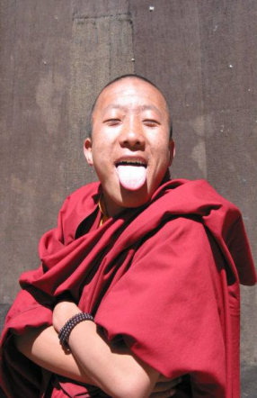
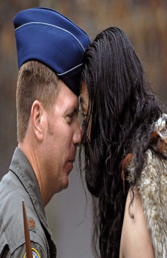

×
Tibet
Stick Out Tongue
Tibetan monks sometimes stick out their tongue as greeting. They do this to show they are not the reincarnation of a cruel 9th century king who had a black tongue. They also press their hands together in front of their chest to show they come peacefully.
×
South Korea
Bow
Everyone bows as a sign of respect and greeting. The older the person (or more high up in the professional world), the deeper the bow they should receive. Hands and arms must stay close to one's side, not hanging out in front.
×
Brazil
Kiss
Brazil is interesting because the number of kisses vary by region. In Sao Paulo and Minas Gerais, they kiss with their right cheeks touching once. In Rio de Janeiro, two kisses are customary, beginning on the right side. In Bahia, they kiss three times -- right, left, right.

×
New Zealand
Hongi
In the traditional Maori greeting, called hongi, two people press their foreheads and noses together. They keep eye contact throughout.
×
Uganda
Handshake
Ugandan greetings are firm handshakes. They're often more distanced than handshakes in the U.S., and people's arms are usually more outstretched.

×
U.S.
Fist Bump
While most people greet with handshakes or hugs, sometimes people do a fistbump as a more casual, youthful greeting.